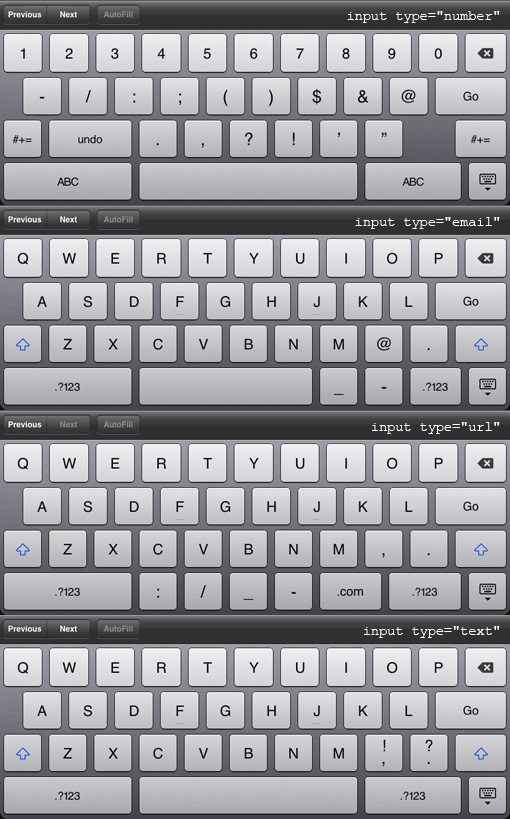

Structure
Think about the stories you read in a newspaper: for each story, there will be a headline, some text and possibly images.… Structure helps readers understand the stories in the newspaper. Textbook page 15
HTML uses elements to describe the structure of pages.Textbook page 21
- <html>
- <body>
- <h1>This is the Main Heading!</h1>
- <p>This text might be an introduction to the rest of the page.</p>
- <h2>This is a Sub-heading</h2>
- <p>Many long articles have sub-headings so to help you follow the structure of what is being written.</p>
- </body>
- </html>
Each element has an opening and closing tag.Textbook page 23
Attributes tell us more about elements. Attributes provide additional information about the contents of an element. They appear on the opening tag and are made up of two parts: a name and value.Textbook page 25
- Attributes always come in name/value pairs like this: name="value".
- Attributes are always specified in the start tag of an HTML element.
- Attribute values should always be enclosed in quotes.
- <img src="images/myimage.jpg" alt="My Image">
imgis the element: an image elementsrcandaltare the names of attributes- each attribute has a specific value
Two key attributes to pay attention to are the id and class attributes. The id attribute specifies a unique id related to a single html element on the page. It is used in CSS and JavaScript as a way to select and manipulate a particular element. Each id must be unique and can appear only once on each html page. The class attribute specifies one or more classnames for an element. The class attribute is mostly used to point to a class in a style sheet. However, it can also be used by a JavaScript to make changes to HTML elements with a specified class.
A trick to help remember the difference: A class can have many students, but each student has a unique id. Remember that a class can be used as many times as necessary on an html page, while and id can only be used once per page.
Rules/Good Practices
- Elements must be properly nested
- Elements should be in lower case
- Attribute names should be lower case
- Attribute values must be quoted
Mandatory Elements
- DOCTYPE declaration
- html
- head
- title
- body
- DOCTYPE declaration
- The first tag in your HTML document is the DOCTYPE. The DTD indicates to a web browser what markup you're using, thereby enabling the browser to accurately display the document. NOTE: The DOCTYPE declaration is not a part of the HTML document itself. It is not an HTML element, and it should not have a closing tag.
<!DOCTYPE html>Textbook page 181
- <html>
- The <html> tag is the root element. The last tag in your document is </html>. This tag tells your browser that this is the end of the HTML document.
- <head>
- The <head> contains information about the page, rather than the information that is shown within the browser window.
- <title>
- The text between the <title> tags is the title of your document. The title is shown at the top of the browser window (or in the tab if using a tab based browser). It is what the browser default to when making a bookmark.
- <meta>
- Previously used by search engines but their abuse lead to new search engine technology. currently the only really valuable meta tags are:
- <meta name="" content="" />
- <meta name="keywords" content="comma, separated, list, of, relevant, words" />
- <meta name="description" content="Brief summary about the page." />
- <meta name="copyright" content="Copyright ©2007 Company. All Rights Reserved." />
- <meta name="author" content="Your Name Here" />
- <meta name="language" content="English" />
- <meta name="revisit-after" content="15" />
- <meta name="robots" content="ALL, INDEX" />
- <meta name="Revisit-After" content="30 Days" />
- <meta name="revised" content="6/10/99" />
- <body>
- Everything inside this element is shown inside the main browser window.
Comments
Use these characters to add HTML comments to your files.
- <!-- this is a comment -->
USE COMMENTS! No matter how familiar you are with the page when you are writing it, you may come back to it later, or have someone else work on it. Comments will make your page much easier to understand.
Tags
Some common tags can be used for the following types of content:
- paragraphs
<p></p> - headings
<h1></h1> - abbreviations
- address
- bold
- citations
- definitions
- emphasis
- example
- horizontal rules (empty tag)
- insert/delete
- italic
- line-breaks (empty tag)
- quotations
- strong
- superscript/subscript
- definition list
- ordered list
- unordered list
- nested list
Links / Navigation
The greatest site architecture is irrelevant if no one can figure out how to access the pages inside that architecture. Web surfers are impatient — they want to get to the good stuff effortlessly. They rarely expend any time figuring out unwieldy navigation; it's so much easier to ask Google to suggest another site. As a result, navigation must help visitors to find what they want easily.
If, as a side benefit, you can expose them to what you want them to discover, so much the better. Navigation should do the following:
Navigation should do the following:
- Provide a conceptual map of the site. A visitor should be able to make a mental model of the site structure.
- Give feedback as to current location: "You are here." In other words, show visitors where they are currently located in relation to the entire site. Psychologists call this 'grounding': locating a known reference point in a foreign information space. Page titles, color-coded sections of the site, or a disabled link for the page that is currently loaded can all serve as current location markers.
- Remind the visitor how he or she got there: "You were there." Breadcrumbs as well as a disabled current link (but left intact in the menu system) give the visitor some idea of how he or she got to the current page.
- Help the visitor find what he or she wants: "You want to go there." After all, that's the point, isn't it? A logically-structured hierarchy with clear categories and labels, along with secondary navigation aids such as a search function and site map, help to render the visitor's quest painless.
- Make the visitor aware of other offerings on your site: "You could go there, if you're interested." The navigation should point out other intriguing content on the site. Think of the navigation as serving the same function as a table of contents of a magazine; both provide an introduction to what is available on the pages—the stuff you were looking for, and the stuff you might be happy or surprised to find as well.
All of these considerations facilitate way finding, the process visitors use to find what they need. We all use the same general way finding techniques whether we're navigating a web site or the King of Prussia Mall.
After all, the primary concern of most websites is the distribution of information. The ability to enable non-linear navigation via the use of links is one of the main things that sets the Web apart from other media. But without organized, coherent, and usable navigation, even a site with the most amazing content will fail.
Navigation Principles
- Create simple, visible, consistent navigation.
- Take advantage of what visitors already know.
- Orient visitors with "You Are Here" markers. (not literally of course)
- Minimize visitor effort.
- Provide multiple ways to access information.
- Provide for visitors with varied skill levels.
- Provide feedback. (hover states)
- Make sure the navigation is flexible and expandable.
Navigation types - there are essentially three types of navigation online:
- Inline navigation
- General links within web page content areas, jump from one location to another location on the same page, without reloading the page.
- Site navigation
- The primary navigation area of a website, commonly referred to as a 'navigation bar'. Clicking a link takes you to a different page.
- Search-based navigation
- A search box that enables you to search a site via terms you input yourself.
Search Based Navigation
It's said there are two types of web users: those who hate search boxes and those who love them. The thing is, search boxes are not always needed, most sites get by with well-structured and coherent navigation, like your portfolio site. Conversely some sites require search boxes, like amazon. How many people have tried to locate an item in amazon from the home page without using the search function? Unlike other types of navigation, search boxes aren't entirely straight forward to set up, they require server-side scripting for their functionality. However, a quick trawl through a search engine provides many options, including Google Custom Search Engine and Yahoo Search Builder (links are in your book). Both of these can be set up to feed the search results back into your layout so that the average user has no idea that you are using a 2nd party search engine, and they are relatively easy to set up.
Links
The other two types of navigation fall under the links category. This is where things get a little convoluted. We mentioned navigating a site via Inline Navigation where a link scrolls the page to a specified area, or Site Navigation where a link takes you to a different page in the same site. But there are also outbound links (not a technical term) that take you to a completely different website.
Links can also download files, open webdav connections, launch email clients or other applications, open new windows, the list goes on and on.
The anchor tag
HTML uses the <a> (anchor) tag to create a link to another document.
An anchor can point to any resource on the Web: an HTML page, an image, a sound file, a movie, etc.
The syntax of creating an anchor:
<a href="index.htm">Home</a>
The <a> tag is used to create an anchor to link from, the href attribute is used to address the document to link to, and the words between the open and close of the anchor tag will be displayed as a hyperlink.
Different ways to write a link
- Relative link
-
Locates a file in relation to the document. Used for linking to another page on the same site.
../ means move up one directory
/ means move down one directoryStarting with a / starts in the root html public directory.
Example: go to my index file one directory up
<a href="../index.htm">My index file</a>
This code will show in the browser as:
My index file - Internal page link
-
Along with linking to other documents, it's possible to link to another point in the same web page. This is handy for things like a FAQ (frequently asked questions) list, enabling the visitor to jump directly to an answer and then back to the list of questions; or for top-of-page links, enabling a user single-click access to return to the likely location of a page's masthead and navigation, if they've scrolled to the bottom of a long document.
When linking to other elements on a web page, you start by providing an id value for any element you want to be able to jump to. To link to that, you use a standard anchor element with an href value equal to that of your defined id value, preceded by a hash symbol (#).
Example: create a link to an unordered list near the bottom of the page.
In your html you have an unordered list with an
idattribute:- <ul id="questions">
- <li><a <href="#answer1">Question one</a></li>
- <li><a <href="#answer2">Question two</a></li>
- <li><a <href="#answer3">Question three</a></li>
- </ul>
In your navigation at the top, add an internal page link:
<a href="#questions">Questions List</a> - Absolute link
-
Includes a full URL. Used for linking to a page on another site.
Example: go to google.com
<a href="http://google.com">google.com</a>
This code will show in the browser as:
google.com - Email link
-
Used to trigger the default email client to open and create an email message.
Example: create a blank email with a pre-populated email address in the To field.
<a href="mailto:darthvader@evil.com">Email Vader</a>
Target Windows
Use the target attribute within the anchor tag to open a link in a custom window.
<a href="http://google.com" target="_blank">google.com"</a>
If the value of the target attribute is set to _blank, each time the link is clicked a new window will open. Alternatively each link can be given a unique custom value.
Images
Graphics are great fun and very seductive. They can convey information quickly and memorably, and their embellishing, enriching presence can add greatly to the appeal of a site. In fact, we have come to expect graphics on all professional sites, so much so that we view sites without engaging graphics as amateurish (unless they are amazingly well laid out with specific attention to the typography). Always, though,we need to remember that graphics should draw the visitor's attention to the real message and content, not distract them from it.
Visual Echoes
The visual consistency of a site is enhanced by repeating graphic elements through out the site. Consider the following:
- Repeat an element from the logo elsewhere on a page. For instance, pick a simple shape from the logo and repeat it as an icon, a button, or a bullet.
- Choose a color from the logo or a photograph and repeat it elsewhere—in a background, on a bullet, or on text links. Use the eyedropper/color picker tool in Photoshop to identify the color code.
- Choose a consistent mood for graphics. For instance, organic shapes are rounded, flowing, and irregular. Manmade shapes are well-defined, with straight lines and right angles. In general, two distinctly different moods such as these don't play well together on a web page.
Avoid Clichés
Avoid web clichés like spinning globes, spiders and webs, or animated envelopes for email. A spinning globe might be appropriate for NASA, but is not appropriate for, say, a site selling golf clubs, just because the site is on the "world wide web".
What type of image should I use?
- .jpg
- (Joint Photographic Experts Group) - supports millions of colors - best for photographs or images that require smooth color transitions and continuous tones. Uses lossy compression which removes information the eye doesn't need, but as compression rates increase this removal info becomes very apparent, and artifacts become more prevalent. As a general rule you should not go much above 50%
- .gif
- (Graphics Interchange Format) - max 256 colors - is useful for displaying images with large areas of flat color, such as logos, line art, and type. - GIF89 supports 1 bit transparency
- .png
- (Portable Network Graphics) - the GIF killer. well it was supposed to be, it was better at handling color than gifs and supports full alpha transparency, unfortunately alpha transparency is not supported by IE6, and IE7 usually renders it correctly, usually. You can google IE PGN FIX for some javascript workarounds if you want to include PNGs with alpha transparency. Microsoft.com offers the filter: AlphaImageLoader. You can look it op on their website where they will show you how to apply it for each individual image hard coded into the page, of course, the way Microsoft says to render alpha transparency, what every other browser will render by default, is not compliant, go figure.
Resolution
Screen resolution: 72dpi
Color Mode
Color mode: RGB
Compression
Graphics increase the time it takes to download pages on the site. Even with today's high-speed access we still need to be cognizant of our download times.
Photoshop has a "Save For Web & Devices" option under the File menu that allows you to set compression levels and file formats and see what it will look like before saving. It also tells you the file size and approximate download time (defaults to 56k modem, but you can change that with the drop menu).
Common Image Mistakes
- Using graphics for body copy
- Not working from original images - continually saving compressed images increases the compression each time.
- Overwriting original documents
- Busy background images
- Lack of contrast
- Using wrong image format or color mode
- Resizing in html
- Not balancing visual quality with file size
- Text overlays and splitting images
- Stealing Images and Designs
- Not using the alt property
- Not reusing images whenever possible
The <img> tag
<img src="myimage.jpg" width="75" height="155" alt="My image" title="my image" />
- src
- the url that defines the location of the image
- width & height
- attributes help format the page before image is loaded, not mandatory for validation, but highly recommended, dimensions are always in pixels, so no px identifier needed
- alt
- alt displays as text in image area when image cannot be displayed or image display is turned off, or when the image is taking too long to download that the page is already built
- title
- a tooltip that displays on mouseover
Align attribute
The align attribute has values for both horizontal and vertical alignment of images in html.
Possible values include:
- top
- middle
- bottom
- left
- right
<figure> tag
HTML5 has introduced a new element to contain images and their caption so the two are associated.
- <figure>
- <img src="images/otters.jpg" alt="Photograph of two sea otters floating in water" />
- <br />
- <figcaption>Sea otters hold hands when they sleep so they don't drift away from each other.</figcaption>
- </figure>
You can have more than one image inside the <figure> element as long as they all share the same caption. Textbook page 120
Tables
The <table> element is used to add tables to a web page. A table is drawn out row by row. Each row is created with the <tr> element.
Inside each row there are a number of cells represented by the <td> element (or <th> if it is a header).
You can make cells of a table span more than one row or column using the rowspan and colspan attributes.
For long tables you can split the table into a <thead>, <tbody>, and <tfoot>.
Textbook Chapter 6
| # | Product | Payment Taken | Status |
|---|---|---|---|
| 1 | TB - Monthly | 01/04/2012 | Approved |
| 2 | TB - Monthly | 02/04/2012 | Declined |
| 3 | TB - Monthly | 03/04/2012 | Pending |
Forms
Forms are used to gather different kinds of user data input.
A form is defined with the <form> tag, and has a series of special tags that should only be used within the form element. Similar to how you would not use a <dt> outside of a <dl>.
Usually, the form is the most important part of the website. Particularly on web stores when they are asking you to enter credit card numbers to complete a transaction, so it should be a model of simplicity and ease of use.
It is fairly easy to create forms—just insert a couple of <input> tags, add a bit of text, slap a submit button on the end, and then you get to go home early, right? Right! It is that easy to build a form.
But, it is a lot harder to create forms that are usable, accessible, and attractive. And although there's a lot you can achieve with markup alone, to create the ultimate usable form, you'll invariably have to turn to JavaScript or server-side code (or both) to help you with validating inputted data and providing users with appropriate and meaningful feedback in a timely fashion.
The majority of online forms are built dynamically by pulling data from databases and pre-populating form with the users info, then when submitted, they usually feed the contents back into a database where administrators can log in and review all the submissions. Can you imagine how many emails amazon would get if every single order was sent to processing via email?
The <form> tag
Example:
<form action="mailto:abc123@drexel.edu" method="post">
Form tag attributes
- action
- The action attribute tells the user agent what it's supposed to do with the contents of the form when the form is submitted. (X)HTML does not actually provide any native mechanism for dealing with form data. All it can do is pass on the information to a form handler (a web page or script), which can be written in PHP, Perl, ASP, and so on. In our case when we use the mailto scripts it automatically opens the default browser, populates the To: field with the provided e-mail address, and dumps the from data into the body of the e-mail.
- method
-
The method attribute informs the user agent how the form data should be passed to the form handler. The two possible values are get and post.
When the get value is used, form data is sent to the form handler in the form of a query string and modifies the URL in the browsers address bar (re: google search).
When the post value is used, those values are not visible in the URL. In our case we want to leave the default post.
Other attributes typically used in the form tag include:
- id
- name
The name attribute is deprecated but being placed for older browsers. Name and ID should be identical.
Form tags
<input>
The most used form tag is the <input> tag. The type of input is specified with the type attribute. Possible input type attribute values are:
- text
- password
- file
- checkbox
- radio
- hidden
- rest
- submit
- button
- date (HTML5)
- email (HTML5)
- search (HTML5)
- url (HTML5)
The <input> element is a self-closing inline element, like an image or a line break, so remember to include the closing forward-slash.
Text input
<input type="text" />
You can also include a value attribute that presets the content of the text control:
<input name="fullname" type="text" value="Insert name here" />
The name attribute sets up a relationship between the attribute and the value for variables in programming so when you use backend scripts, so fullname="Insert Name Here". names like ids need to be unique
In most browsers, the width of the text field is 20 characters by default. You can change this by setting the attribute size="25" where 25 is not pixels but characters.
<input name="fullname" type="text" value="Insert name here" width="25" />
You can also restrict the number of characters the user can type in here with the maxlength attribute, maxlength="50", you do this so someone does not copy and paste the gettysburgh address into every single input tag.
<input name="fullname" type="text" value="Insert name here" width="25" maxlength="50" />
With HTML5 there is a new attribute that can be used in place of setting a default value attribute. This attribute is the placeholder attribute.
<input name="fullname" type="text" value="" placeholder="Insert name here" width="25" maxlength="50" />
Password input
Acts the same as a single line text input, except characters are blocked out.
<input type="password" />
Radio Buttons
Radio Buttons are used when you want the user to select one of a limited number of choices.
A radio button input takes the form of a circular inset, with a dot appearing inside the circular inset when the radio button is selected. You use radio buttons to indicate that only one choice out of several — a radio group — can be selected.
To indicate to the user agent that a radio button is part of a group, you use the name attribute, giving each radio input element an identical name value. When the form is rendered, the user agent will not allow more than one radio input to be selected if that input shares a name value with another.
<input name="super" type="radio" value="Yes" checked />
Do You have superpowers?
Yes
No
Radio buttons are for choosing only a single option from a list of options.
If you do not add checked to any of the radio buttons in the group and the user does not click anywhere, they can submit the form without anything selected. Conversely, if you have checked for multiple radio buttons in a group the web will display them as selected, and again a user could submit incorrect info. It is important to make sure that you have exactly one radio button in each radio group with the checked attribute.
Checkboxes
Checkboxes are used when you want the user to select one or more options of a limited number of choices. A checkbox input takes the form of a square box, with a check mark or an "x" character appearing when the box is selected.
- <p>If Yes:</p>
- <p><input name="powers" type="checkbox" value="fly" /> Fly</p>
- <p><input name="powers" type="checkbox" value="bulletproof" /> Bulletproof</p>
- <p><input name="powers" type="checkbox" value="strength" /> Superhuman Strength</p>
- <p><input name="powers" type="checkbox" value="vision" /> X-Ray Vision</p>
- <p><input name="powers" type="checkbox" value="other" /> Other</p>
If Yes:
Fly
Bulletproof
Superhuman Strength
X-Ray Vision
Other
Like the radio button these can also have the attribute checked, ever see a form where at the bottom there is only one check box next to "want to receive tons of spam email from us" and it is already checked.
Reset Button
A reset button resets all form elements within the same form to their initial values as set in the HTML. Including a reset button used to be a common practice, but it's since become unfashionable due to the high risk of users accidentally resetting their form instead of submitting it. Without any undo function, reset buttons are of little use and should be used with caution, if at all.
<input name="reset" type="reset" value="reset" />
Submit Button
A submit button is used to submit all the form data to the file indicated in the form's action attribute.
<input name="submit" type="submit" value="submit" />
For both of these buttons it is the value attribute that defines the text on the button. Change value="submit" to value="OK!"
Textarea
The <textarea> element is similar in some ways to the text input element, but it allows multiple lines of input rather than just one. It uses a pair of attributes, cols and rows, to control its size, and instead of using a value attribute to preset any textual content, it uses the content of the element itself. It's a container element, rather than a self-closing element.
- <p>If other, please list:<br />
- <textarea name="other_powers" cols="20" rows="5"></textarea></p>
If other, please list:
cols (columns) and rows are like the width attribute for input, this measures in characters not pixels. Note: do not use html tags inbetween text area tags. It will not validate and it will not format the text. Also, the text area tag works like the pre tag and it will render every return and space
Drop Down Menu
The <select> element is a container element (similar to ul), allowing any number of <option> and <optgroup> tags. It normally displays as a drop-down list. This element has only three specific attributes: name, size, and multiple. The name attribute is used here to identify the control, and in the case of <select> it is not optional— every <select> must have a name.
Each option within a <select> is contained within an <option> tag. The <option> tag has three specific attributes: selected, value, and label. The selected attribute is used to indicate to the user agent that a particular <option> should be selected initially; without it, the browser may display either nothing at all (just a blank select box) or the first <option> it encounters.
We can add the selected attribute to any option and that will be the one that the browser displays by default.
<option selected="selected">Ironman</option>
Multiple <option> tags can have the selected attribute set, but only if the <select> has the multiple attribute. A <select> that lacks the multiple attribute cannot have more than one <option> initially selected (after all, how would it be displayed?).
The value attribute is used here to allow the submission of a value that differs from the content of the <option>, and if it is not present, then the content is instead used as the value
To help provide structure to your menus, you can use the <optgroup> element to group similar <option> elements. So, instead of the following markup:
But that just splits them into groups. We can add a label to the opt groups to make more sense for our users.
<select name="myHero">
<optgroup label="DC Comics">
<option value="sup" selected="selected">Superman</option>
<option value="bat">Batman</option>
<option value="won">Wonder Woman</option>
<option value="gre">Green Lantern</option>
<option value="fla">Flash</option>
</optgroup>
<optgroup label="Marvel Comics">
<option value="spi" selected="selected">Spiderman</option>
<option value="iro">Ironman</option>
<option value="cap">Captain America</option>
<option value="dar">Daredevil</option>
<option value="wol">Wolverine</option>
</optgroup>
</select>
The label attribute used here is supported across browsers. A benefit of using <optgroup> tags to divide your <option> elements is that the <optgroup> label cannot be selected, nor can its value be submitted as data, whereas in the former example the web author would either have to live with erroneous submissions or provide a client- or server-side validator to ensure such dividers had not been submitted. Also, using <optgroup> is a clear example of using the right tag for the right job.
The size and multiple attributes are related. If the multiple attribute is set (multiple="multiple"), then the <select> menu will normally display as a scrollable list box to permit multiple selections by the user, and the size attribute, which accepts a numerical value, determines how many rows of options are displayed.
Fieldset
The <fieldset> element allows web authors to divide form controls into thematically linked sections, making it easier for users to work through the form while also enhancing accessibility for assistive devices. Most browsers will display a <fieldset> with a simple border.
- <fieldset>
- Name <input name="fullname" type="text" />
- E-Mail <input name="email" type="text" />
- </fieldset>
Label
<label>, also increases both usability and accessibility. This element is used to form an association between a textual label and a form control. In visual browsers, a user can then bring focus to the form control by clicking the associated label text as well as within the control itself.
- <p>Do You have superpowers?</p>
- <p>
- <input id="yes" name="super" type="radio" value="Yes" checked="checked" />
- <label for="yes">Yes</label>
- </p>
- <p>
- <input id="no" type="radio" name="super" value="No" />
- <label for="no"> No</label>
- </p>
Using the for attribute can be laborious. Each form control requires a unique id attribute to pair up with the label's for value, which involves a fair amount of hand-coding if your form is long. But it is well worth it. Without it you are asking your user to move a flea around the screen with their mouse and try to land it in a tiny little circle and click. This gives them a wider margin on control.
You can also apply this to check boxes, making it easier to making these easier to select as well.
HTML5 Inputs
Date
<input type="date" />
Number
<input type="number" />
<input type="email" />
Search
<input type="search" />
URL
<input type="url" />


Form Usability
As mentioned earlier, it is easy to create a form, but it is much harder to create a really good form. Although in-depth knowledge of all the available form markup will help, it's not enough. Because a form is more of an application than a web page, you need to consider usability seriously. If your form is the point at which the general public starts giving you money, you need to test your form rigorously, observe people using it and record their reactions (even if your audience is just a few colleagues from the other side of the office), and make sure it works as well as it possibly can.
You may have noticed, by the way, that I'm talking about form usability before form styling—this is because it is more important that your form works well than looks good.
Styling can come after you've made sure the form doesn't make people cry.
Use the right tag for the right job
So, you know about every input type there is, but which one is appropriate to use in a given situation? Some of these are obvious—a file input has only one purpose, and no other type of input can be used in its place—but what about, for instance, check boxes versus radio buttons?
A good rule of thumb is that if you have a list of two or more options, and the user must select one and only one of them, use radio buttons. Selecting one radio button should then deselect any other radio button that is part of the same named group. But if the list contains many options to select from, consider using a <select> menu instead. You'll retain the inability to select more than one option, and you'll save some space (at the expense of "discoverability").
Check boxes, on the other hand, are used when there are several choices to make, and users can leave them all blank or select as many as they like. Checking one check box does not deselect any others within the group. The menu equivalent of a series of check boxes is a <select> menu with the multiple attribute present, but check boxes are generally easier to use as they do not require the user to understand what keyboard/mouse combination to use (Ctrl-click? Command-click? What about keyboard-only users?), so you may wish to avoid multiple-select lists where possible.
You should also use a check box when there is a single option that users can switch on or off, such as agreeing for their data to be passed along to third-party companies. You would not use a radio button here because a radio button can only be deselected by selecting another.
Remember also to use labels, field sets, and legends to aid in both usability and accessibility.
Keep it short and simple
Collect only the information you need, and no more than that. Do you really need to know if I'm a Mr. or a Ms.? Do you really need my fax number? My occupation? My annual salary in dollars? My mother's maiden name?
Question the presence of every field you have in your form, and if it's a compulsory field, question again whether it needs to be. Your marketers may relish the opportunity to collect reams of personal data about your site visitors, but the longer your form is and the more irrelevant users start perceiving it to be, the higher the risk that they'll abandon it.
But this is the practice you should do in the future, for this class you need to build a form using every tag we have/will discuss here today to show that you understand the proper usage of each tag.
Validation
The simplest change you can make to your forms is to mark a text input field as 'required':
Your Name: <input type="text" name="name" required>
This feature is available in HTML 5, although not on all browsers. Here is a list of compatible browsers.
There are countless validation client side and server side options. A good rule of thumb is to do as much of the validation process on the client side, prior to submitting the form, to take less of the work load off the server. Here is an example of a javascript based form validation that has backup support for Safari and IE.
Elements: Block vs Inline
HTML elements can be displayed various ways.
- Block
- Takes up the full width available, width a new line break before and after.
- Inline
- Takes up only as much width as is needed, and does not foce line breaks.
Important Attributes!
Two key attributes to pay attention to are the id and class attributes. The id attribute specifies a unique id related to a single html element on the page. It is used in CSS and JavaScript as a way to select and manipulate a particular element. Each id must be unique and can appear only once on each html page. The class attribute specifies one or more classnames for an element. The class attribute is mostly used to point to a class in a style sheet. However, it can also be used by a JavaScript to make changes to HTML elements with a specified class.
A trick to help remember the difference: A class can have many students, but each student has a unique id. Remember that a class can be used as many times as necessary on an html page, while and id can only be used once per page.
Block Elements
Certain tags are displayed in a block style naturally, for example:
- div
- h1 - h6
- p
- ul, ol, dl
- li, dt, dd
- table
- blockquote
- pre
- form
Example:
A new div tag with a paragraph inside.
The div tag, which stands for division, is used to add structure to a document.
The <div> tag defines a division (or section) in a document. Use the <div> tag to group elements so you can format them with styles.
Typically page contents are organized in 4 major sections sometimes more, sometimes less depending upon you page design and content.
- branding or header
- main navigation
- content
- footer
<div> tags can be used to create divisions, or sections to group your content into these types of content areas.
HTML5 has provided more semantic options for dividing up page content, with the addition of new elements:
- header
- nav
- aside
- article
- section
- footer
The full list of HTML5 supported elements is available, the best practice when coding is to use the most semantically accurate tag based on the content being displayed.
Inline Elements
Some examples of naturally inline elements include:
- span
- a
- strong
- em
- img
- br
- input
iFrames
The <iframe> tag specifies an inline frame. An inline frame is used to embed another document within the current HTML document.
<iframe src="http://w3schools.com"></ifram>
Liquid vs Fluid
Fixed pages have hard coded widths and display similar to a printed page. Fluid pages adapt to different screen sizes, this is also know as being 'responsive'.
Fixed Layout
Pros:
- You can always (theoretically) be sure where your elements will be.
- It looks virtually the same in every browser.
- You can intermix graphics and text perfectly.
- Things looked most organized when shaped like rectangles.
http://dowebsitesneedtolookexactlythesameineverybrowser.com
Cons
- Your layout requires a minimum horizontal resolution to keep horizontal scrollbars away.
- If you decide to rearrange your layout, you have to completely re-adjust it (lots of css work).
- Your site may tend to look like everyone else's' site.
Fluid Layouts
Pros:
- The layout fits the current users resolution (hand held, laptop or HD monitor).
- Usually less empty space (sometimes more, though) due to percentage-based dimensions.
- You and your contributors aren't bound by dimensions.
- You can re-adjust your layout at any time, and everything will fit perfectly.
Cons:
- Your site most likely won't fit into a nice, comfortable package.
- With extremely high resolutions, your site may be VERY wide and short.
- Your site may become hard to navigate, due to being unconventional.
Many argue that the future of web design is fluid layouts. To say the very least, conforming to the new fluid-layout standard will save you a lot of headaches (due to you banging your head on your desk). Fixed layouts are definitely possible with CSS, however, fluid layouts tend to require less code and less hacks to keep it all working across different browsers.
The fundamental element of every browser is that a block element will stretch fit the content within it, therefore, any fluid element will fit correctly regardless of what browser you use or what the size of the screen you are viewing the site on.